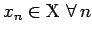
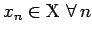
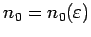
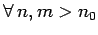
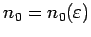
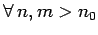
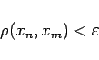
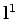

Inhalt Index DeskTop Bronstein

 Funktionalanalysis Metrische Räume Vollständige metrische Räume
Funktionalanalysis Metrische Räume Vollständige metrische Räume


Sei  ein metrischer Raum. Die Folge
ein metrischer Raum. Die Folge  mit  heißt CAUCHY-Folge, fundamentale Folge oder manchmal auch noch konvergent in sich, wenn es für
mit  heißt CAUCHY-Folge, fundamentale Folge oder manchmal auch noch konvergent in sich, wenn es für  einen Index  gibt, so daß  die Ungleichung
einen Index  gibt, so daß  die Ungleichung
|  | (12.56) |
gilt. Jede CAUCHY-Folge ist eine beschränkte Menge. Weiter gilt, daß jede konvergente Folge eine CAUCHY-Folge ist. Die Umkehrung gilt im allgemeinen nicht, wie das folgende Beispiel zeigt.
| Beispiel |
|
Betrachtet man im Raum  die Metrik (12.46) des Raumes |